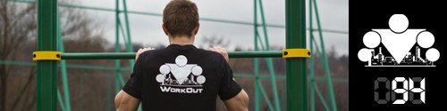

<==== Вернуться к оглавлению

После разминки выполняем уже привычного нам всадника (30-60 секунд) и переходим к основному комплексу!
Следующие 3 упражнения делаются друг за другом без отдыха в течение 5 кругов:
I. Индийские отжимания. Делаем 5-10 раз.
II. Спартанские приседания. Лучше всего выполнять стоя на одной ноге и держась за какую-либо опору (например столб от турника) двумя руками. Приседаем за счёт сгибания одной ноги, другую (уже согнутую в колене) по мере движения вниз отводим назад. Не забываем про то, что спину нужно держать ровно, даже когда вы наклоняетесь вперед. Делаем по 5-10 раз на каждую ногу.
III. Подтягивания с согнутыми ногами. Скажу сразу, многим будет довольно непривычно выполнять этот вид подтягиваний, за счет отсутствия координации мышц. Ноги можно согнуть в коленях и поднять до 90 градусов, можно согнуть в коленях и прижать к груди, если уровень позволяет, то можно подтягиваться держа уголок. 5-10 повторений без раскачиваний и махов!
До встречи завтра ;)
======> День 95. ТУРБО комплекс ДЕЛЬТА